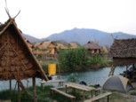
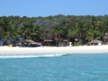

Here are some interactive panoramic views from our travels. You can look around and zoom in using the mouse.
To view the panorama you require the QuickTime plug-in.
Click on an image to start exploring!
See chanting monks in a Buddhist temple in Bangkok.
Is it a 400 year old skate park? No, it's an ancient astronomical computer in Jaipur, India.
Wonderful, hippy Pai in Northern Thailand. You can see the beautiful huts on stilts where tourists stay.

The Perhentian Islands in North East Malaysia are the closest thing I've seen to Alex Garland's 'The Beach'.

Ko Samui, the island in Eastern Thailand isn't just an Asian version of Lanzarote, it has some gorgeous temples, explore this modern Buddhist one with us.